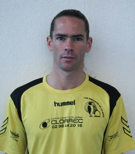
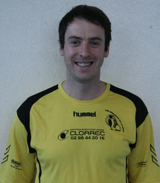

|
JORDAN CORVEE |
| A2 (122ème) - A2 (64ème) - T50 (34ème) |
| Né le 13/02/1995 - Au club depuis 2012 |
| Club précédent : Alençon |
| 5 victoires en tournois en 2011/2012 |
International Cadet - Membre du Pôle France Jeunes |
|
|
|
JOCELYN DESCHAMP |
| T50 (26ème) - A2 (100ème) - T50 (25ème) |
| Né le 16/05/1994 - Au club depuis 2010 |
| Club précédent : AS Treguier |
| 1 victoire en tournois en 2011/2012 |
International Junior - Membre du Pôle France Jeunes |
|
|
 |
JOEL MEVEL |
| A1 (95ème) - A3 (149ème) - B1 (1706ème) |
Né le 06/05/1977 - Au club depuis 2006 |
| Clubs précédents : Flsm Brest, AS Ponts-de-Cé, St Jacques de la Lande. |
| 3 victoires en tournois en 2011/2012 |
|
|
|
 |
TRISTAN VOILLET |
B4(2188ème) - A4(220ème) - B1(507ème) |
| Né le 02/07/82 - Au club depuis 2005 |
| Club précédent : néant |
| |
|
|
|